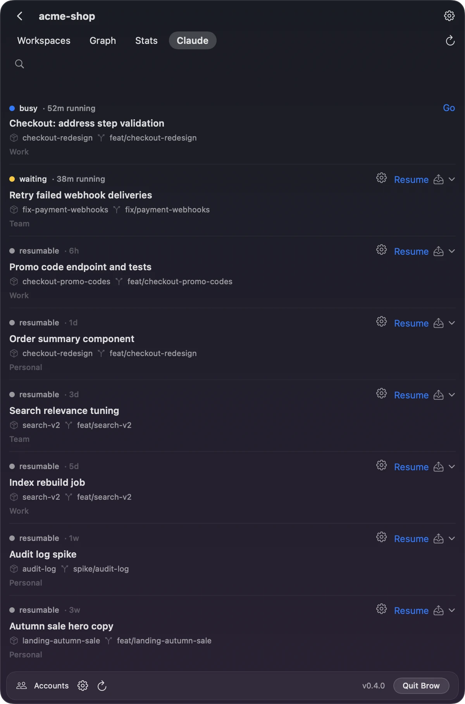
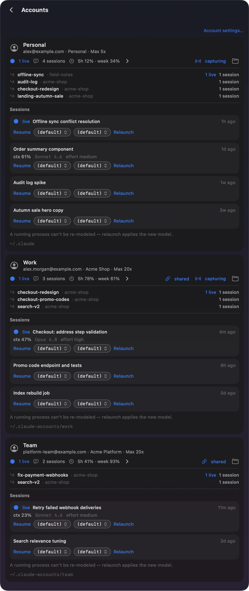

Continue a Claude Code session on another account
When one of your Claude accounts has used up its limit, a Claude Code session can carry on under another account, with its history. Workspaces, the part of Brow in the macOS menu bar, has three ways to do it: Resume as…, Migrate to… and Share. Brow’s notch tells you which account still has room.
Switching models doesn’t help with a session or weekly limit: it covers every model, and Claude Code’s message says when it resets (Anthropic on usage limits).
Where Claude Code keeps an account’s sessions
Claude Code keeps an account’s settings, session history and plugins in one folder: ~/.claude by default, or the folder that CLAUDE_CONFIG_DIR names. Each folder also has its own sign-in: on a Mac, Claude Code keys the Keychain entry to the folder. Anthropic describes this under Log in with multiple accounts and Credential management.
Brow keeps each extra account in ~/.claude-accounts/<name>. To start Claude Code as the default account:
claudeTo start it as the account in ~/.claude-accounts/work:
CLAUDE_CONFIG_DIR=~/.claude-accounts/work claudeA session’s transcript is a file in its account’s folder: projects/<project>/<session-id>.jsonl, where <project> is the session’s working directory with every character other than a letter or a digit turned into a hyphen (where transcripts are stored). So the work account’s sessions in /Users/you/Workspaces/acme-shop/loyalty-points are in its folder projects/. To list the work account’s project folders:
ls ~/.claude-accounts/work/projectsEach folder has its own session history, so another account doesn’t see a session until its files are shared with that account’s folder or copied into it. Brow does one or the other.
Three ways to move a session in Brow
Open Workspaces from Brow’s item in the menu bar, the notch with two dots, or from the button with stacked squares in the notch panel. On a project’s Claude tab, a session you can resume has a Resume button, which continues it under its own account. Beside it, the tray icon opens Migrate to… and the chevron opens Resume as…, each with a line for every other account and that account’s 5-hour and weekly use, such as Resume as Work — 5h 78% · week 61%
. Share is the share icon beside a session of an account other than ~/.claude, for example in an open workspace’s list of sessions on the Workspaces tab.

- Resume as…
- Continues the session under another account without copying it. Brow links the accounts involved to the shared store, which is the default account’s own
~/.claude, and starts Claude Code under the account you picked, in the session’s own directory. - Migrate to…
- Copies the session into another account, without linking the two. It works while that account is in use, and the source stays as it was.
- Share
- Moves a session of an account other than the default into the shared store,
~/.claude. It starts nothing.
Resume as…
- Exit Claude Code in the session, for example with
/exit, so that only one process writes it (one writer per session). - On the project’s Claude tab, open the chevron beside the session’s Resume and pick the account.
- Brow links the accounts if they aren’t linked yet, then opens the session in a new cmux workspace, in the session’s directory.
What Brow runs there is equivalent to this, in the session’s directory, for the account in ~/.claude-accounts/work:
CLAUDE_CONFIG_DIR=~/.claude-accounts/work claude --resume <session-id>For the default account it leaves CLAUDE_CONFIG_DIR out. It adds --model and --effort when the project or the account has a default, --dangerously-skip-permissions when the project has Skip permissions on, and BROWSER=… pointing at Brow’s browser router, so that a sign-in opens in that account’s own browser profile. It runs the claude set in Settings → General → Path to claude. Before it starts Claude Code in a folder other than ~/.claude, it sets hasCompletedOnboarding in that folder’s .claude.json, so the session doesn’t open Claude Code’s first-run setup.
Resume as… opens the session in cmux. For Terminal.app, press the gear beside the session instead: the launch sheet has Account and Open in, and another account chosen there goes through the same linking.
Resume as… needs an account signed in at the default folder, ~/.claude, because that folder is the shared store.
Migrate to…
Migrate to… copies into the target account’s folder:
- the transcript,
<session-id>.jsonl, and the folder of the same name beside it, if there is one; - the project’s auto memory, file by file, skipping files the target already has;
- the session’s entries in
file-history,tasksandsession-env.
If the transcript is gone from the source account but the transcript safety net still holds a copy that Claude Code’s own retention would keep, it copies that one.
It also merges into the target the project’s entry in .claude.json (for the default account, ~/.claude.json), a few settings.json keys such as enabled plugins, model and theme, and the source account’s plugins. Where the target already has a value or a file, the target’s stays. Brow writes those files under Claude Code’s own lock, and merges again if a file changes while it works. That is what lets it migrate into an account that is in use.
Migrate to… starts nothing and doesn’t link the accounts. The copy is listed as a session of the target account: open Accounts at the bottom of the Workspaces panel, open that account’s sessions with the arrow after its session count, and press Resume. On the Claude tab the original and the copy share one row, and Resume as… from there links the two accounts.
Share
Share is for a session that belongs to an account other than ~/.claude. It links that account to the shared store (what linking changes on disk): the session’s project folder moves into ~/.claude with the account’s other sessions from the same directory, and a link takes its place. From then on the default account sees those sessions too, and Resume as… opens this one under any other account without a copy. Share refuses a session that is running, and it starts nothing.
What linking changes on disk
An account is linked the first time you use Resume as… or Share with it, or when you press Share sessions on its card in Settings → Accounts. Linking works per account, not per session:
| In the account’s folder | After linking |
|---|---|
file-history, tasks, session-env | Symbolic links to the same folders in ~/.claude |
projects/<project> | A symbolic link to ~/.claude/ |
settings.json, plugins | Unchanged: Brow never shares them |
Share sessions links file-history, tasks and session-env. A projects/<project> folder becomes a link only when a session in it is resumed under another account or shared. The sign-in stays with each account: linking never moves or shares Claude Code’s credentials.
Before a real folder becomes a link, Brow moves into ~/.claude whatever ~/.claude doesn’t have yet. Where both sides have an entry, ~/.claude keeps its own, and the account’s copy goes to grove-backup/ in the account’s folder.
~/.claude itself is never a link: it is the store. The Accounts screen marks each linked account shared.

~/.claude; Work and Team are linked to it.To see the links in an account’s folder:
ls -l ~/.claude-accounts/work ~/.claude-accounts/work/projectsOne writer per session
A session is one transcript. Claude Code’s documentation warns that if you resume the same session in two terminals without forking, messages from both interleave into one transcript (Branch a session). Brow refuses the moves that could do that across accounts:
- Resume as… checks whether the session is running under another account. If it finds it running, Brow starts nothing and asks you to close it first.
- Share refuses a session that is running, because linking moves its files.
Both checks look among the running Claude Code processes for the session’s ID and for its directory, so a session that was started as a new one, rather than resumed, is caught too, and so is any other Claude Code running in that directory. Exit Claude Code in the session before you move it.
Which account has room
Brow’s notch shows, for each account, the 5-hour limit, the weekly limit and any model-specific weekly limit, with the time until each resets. Every account picker in Workspaces shows the same 5-hour and weekly use, as the notch last read it, so the account you move a session to is one that can take it.
Every session Workspaces starts gets Brow’s browser router as BROWSER=…. If a session asks you to sign in again, the page opens in that account’s own browser profile. Separate profiles need Chrome, Chromium, Brave or Edge.
Questions
How do I set up the accounts?
In Brow, open Settings → Accounts and press Sign in…. Brow creates the next free folder, ~/.claude-accounts/account-1 and so on, and opens Anthropic’s own sign-in in Terminal. When Workspaces starts, it adds every signed-in folder it finds in ~/.claude-accounts, alongside the default account in ~/.claude, and calls each account by the name you gave it in Settings, or else its email. To set accounts up by hand, see Use multiple Claude Code accounts on one Mac.
Does the session keep its history?
Yes. Resume as… continues the same transcript through the shared store. Migrate to… copies it and leaves the original as it was. Share moves it into ~/.claude, and the account reaches it through a link.
Which one should I use?
Resume as… to carry on now under another account, if you don’t mind the two accounts sharing session folders. Migrate to… to give an account its own copy and keep the accounts apart. Share to put a session of another account into the shared store without starting it yet.
How do I undo linking?
Linked accounts keep working without Brow, and Brow has no unlink button: the next Resume as… or Share with that account links it again. To give an account its own copies back, run this in the account’s folder while no Claude Code session uses the account. It replaces each link with a copy of the folder it points to.
cd ~/.claude-accounts/work
find file-history tasks session-env projects -maxdepth 1 -type l |
while read -r link; do
target=$(readlink "$link")
rm "$link" && cp -R "$target" "$link"
donegrove-backup/ in the account’s folder holds what linking set aside. Look through it before you delete it. Workspaces still counts the account as shared, so its Accounts screen reports the folders as not linked until the next Resume as… or Share with that account links them again.
Brow is free and open source, for macOS 26 or later on Apple silicon: install Brow. Everything Workspaces changes in Claude Code’s folders is listed under What Brow does on your machine. For the workspaces themselves, see Run Claude Code across multiple repositories. Claude Code behavior on this page was checked on 13 October 2026; Brow’s is that of version 0.4.0.